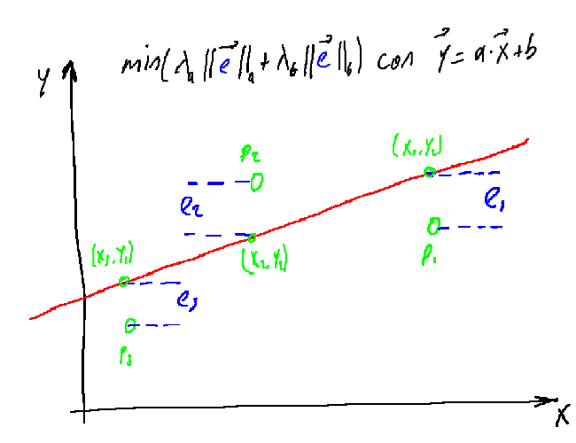

library(torch)
x <- torch_randn(c(3, 2, 3))
y <- torch_zeros(c(3, 2, 3))
nnf_mse_loss(x, y)torch_tensor
1.20262
[ CPUFloatType{} ]Jhonatan Zambrano
16 de marzo de 2023

Esta es la cuarta y última entrega de una serie que presenta las bases de torch. Inicialmente, no enfocamos en los tensores. Para ilustrar su potencia, codificamos una red neuronal completa (aunque de pequeño tamaño) desde cero. Allí no se usó ninguna de las capacidades de alto nivel de torch, ni siquiera autograd, su herramienta de diferenciación automática.
Esto cambio en la siguiente entrega. No seguimos pensando en derivadas o en la regla de la cadena; un llamado a backward() fue suficiente.
En la tercera entrega, el código vio nuevamente una simplificación importante. En lugar del tedioso ensamble del grafo (disposición de las capas) manualmente, se dejó que los módulos se encargaran.
Partiendo de lo anterior, quedan dos cosas mas por hacer. Primero, aún calculamos las perdidas a mano. Segundo, aunque obtenemos los gradientes buenamente calculados de autograd, aún programamos un ciclo sobre los parámetros para actualizarlos por nuestros propios medios. No es una sorpresa saber que nada de esto es necesario.
torch incluye todas las funciones usuales de perdidas, tales como error cuadrático medio, entropía cruzada, divergencia Kullback-Leibler y similares. En general, hay dos modos de uso.
Tomemos por ejemplo el calculo del error cuadratico medio. Una manera es invocando nnf_mse_loss() directamente en la predicción y los valores de salida verdaderos:
torch_tensor
1.20262
[ CPUFloatType{} ]Otras funciones de perdidas designadas para ser invocadas directamente inician con nnf_ como: nnf_binary_cross_entropy(), nnf_nll_loss(), nnf_kl_div() y asi sucesivamente 1.
La segunda forma es definir el algoritmo previamente e invocarlo posteriormente. En este caso, todos los constructores inician con nn_ y terminan en _loss. Por ejemplo: nn_bce_loss(), nn_nll_loss(), nn_kl_div_loss(), etc 2.
El último método es preferido cuando el mismo único algoritmo debe ser aplicado a mas de un par de tensores.
Hasta ahora, hemos estado actualizando los parámetros del modelo usando una estrategia simple: Los gradientes nos indican en que dirección la curva de la función de perdidas va hacia abajo; la rata de aprendizaje nos dice que tan grande debe ser el paso que se de en dicha dirección. Lo que hicimos fue una implementación directa del descenso del gradiente.
Sin embargo, los algoritmos de optimización usado en aprendizaje profundo son mucho mas sofisticados. Abajo, observaremos como reemplazar nuestras actualizaciones manuales usando el algoritmo Adam (Kingma y Ba 2017). Aunque primero, demos un vistazo a cómo trabajan los optimizadores de torch.
Aquí tenemos una red muy sencilla que consiste en una sola capa lineal a ser invocada por un único punto de datos (una salida).
$weight
torch_tensor
0.4308 0.2939 0.4302
[ CPUFloatType{1,3} ][ requires_grad = TRUE ]
$bias
torch_tensor
-0.5542
[ CPUFloatType{1} ][ requires_grad = TRUE ]Cuando se crea un optimizador, le estamos diciendo que parámetros deben ser usados.
<optim_adam>
Inherits from: <torch_optimizer>
Public:
add_param_group: function (param_group)
clone: function (deep = FALSE)
defaults: list
initialize: function (params, lr = 0.001, betas = c(0.9, 0.999), eps = 1e-08,
load_state_dict: function (state_dict)
param_groups: list
state: State, R6
state_dict: function ()
step: function (closure = NULL)
zero_grad: function ()
Private:
step_helper: function (closure, loop_fun) En cualquier momento podemos inspeccionar estos parámetros:
$weight
torch_tensor
0.4308 0.2939 0.4302
[ CPUFloatType{1,3} ][ requires_grad = TRUE ]
$bias
torch_tensor
-0.5542
[ CPUFloatType{1} ][ requires_grad = TRUE ]Ahora vamos a realizar la propagación hacia adelante y hacia atrás. La retro-propagación calculará los gradientes, pero no actualiza los parámetros, como podemos ver a continuación de los objetos model y optimizer:
$weight
torch_tensor
0.4308 0.2939 0.4302
[ CPUFloatType{1,3} ][ requires_grad = TRUE ]
$bias
torch_tensor
-0.5542
[ CPUFloatType{1} ][ requires_grad = TRUE ]$weight
torch_tensor
0.4308 0.2939 0.4302
[ CPUFloatType{1,3} ][ requires_grad = TRUE ]
$bias
torch_tensor
-0.5542
[ CPUFloatType{1} ][ requires_grad = TRUE ]Invocando el método step() en el optimizador se realiza la actualización de los pesos del modelo. De nuevo, revisemos que, tanto model como optimizer, ahora contienen los valores actualizados:
NULL$weight
torch_tensor
0.4208 0.3039 0.4202
[ CPUFloatType{1,3} ][ requires_grad = TRUE ]
$bias
torch_tensor
-0.5642
[ CPUFloatType{1} ][ requires_grad = TRUE ]$weight
torch_tensor
0.4208 0.3039 0.4202
[ CPUFloatType{1,3} ][ requires_grad = TRUE ]
$bias
torch_tensor
-0.5642
[ CPUFloatType{1} ][ requires_grad = TRUE ]Si realizamos la optimización en un ciclo, necesitamos asegurarnos de que la invocación a `optimizer$zero_grad() en cada paso, porque de otro modo los gradientes se acumularían. Podemos ahora ver la versión final de nuestra red neuronal.
### generación de datos de entrenamiento ---------------
# dimensiones de la entrada (número de características de entrada)
d_in <- 3
# dimensiones de la salida (número de características de predicción)
d_out <- 1
# número de observaciones en el conjunto de entrenamiento
n <- 100
# Creación de datos aleatorios
x <- torch_randn(n, d_in)
y <- x[, 1, drop = F] * 0.2 - x[, 2, drop = F] * 1.3 - x[, 3, drop = F] * 0.5 + torch_randn(n, 1)
### Definición de la red neuronal
# dimensiones de la capa oculta
d_hidden <- 32
model <- nn_sequential(
nn_linear(d_in, d_hidden),
nn_relu(),
nn_linear(d_hidden, d_out)
)
### Parámetros de la red
# para optimización Adam, necesitamos escoger una tasa de aprendizaje mas alta en este caso
learning_rate <- 0.08
optimizer <- optim_adam(model$parameters, lr = learning_rate)
### Ciclo de entrenamiento
for (t in 1:200){
### ------ propagación hacia adelante---------
y_pred <- model(x)
### ------ cálculo de perdidas --------
loss <- nnf_mse_loss(y_pred, y, reduction = "sum")
if(t %% 10 ==0)
cat("Epoch: ", t, " Loss: ", loss$item(), "\n")
### ------- retro-propagación ---------
# puesta a cero de los gradientes antes de iniciar la retro-propagación
optimizer$zero_grad()
# Cálculo de los gradientes para los parámetros del modelo
loss$backward()
### ------- actualización de los pesos -------
# se usa el optimizador para actualizar los parámetros del modelo
optimizer$step()
}Epoch: 10 Loss: 101.9358
Epoch: 20 Loss: 83.14806
Epoch: 30 Loss: 76.63703
Epoch: 40 Loss: 71.65172
Epoch: 50 Loss: 65.41241
Epoch: 60 Loss: 59.46485
Epoch: 70 Loss: 55.67398
Epoch: 80 Loss: 52.05198
Epoch: 90 Loss: 50.23497
Epoch: 100 Loss: 48.91325
Epoch: 110 Loss: 45.77558
Epoch: 120 Loss: 44.74579
Epoch: 130 Loss: 41.58841
Epoch: 140 Loss: 49.05213
Epoch: 150 Loss: 42.33701
Epoch: 160 Loss: 38.36844
Epoch: 170 Loss: 38.33907
Epoch: 180 Loss: 36.47657
Epoch: 190 Loss: 35.86893
Epoch: 200 Loss: 36.88996